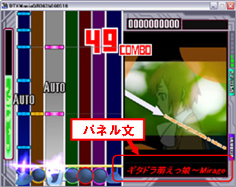

| 画面構成 |
|---|
| [基本情報]タブ |
曲データに関する諸情報の設定を行います。
曲名、製作者、コメント
BMP
DrumLv., GuitarLv., BassLv
パネル
プレビュー音
選曲画像
Loading 画像
背景画像
結果画像
曲データの曲名、製作者名、ならびにコメント文を記述します。
これらは、DTXManiaの選曲画面で表示されます。
製作者名としては、DTXファイルの作者ではなく、元になった曲のアーティストの名前（歌手名等）を書くことが主流ですが、別にどっちでもいいです。
曲データの演奏速度を BPM (Beats/Minute）で指定します。BPM
は”１分間における拍（４分音符）の数”を意味し、数値が大きいほど速い曲になります。
BPM はここで指定した値が初期値となりますが、譜面の BPx レーンでこれを変更することが出来ます。
ドラム、ギター、ベースの難易度を、（易しい）1〜100 （難しい）の数値で指定します。
DTXManiaでは、この数値を設定しなければ演奏可能な譜面として認識されません。
DTXMania の演奏画面に表示するコメントを記述します。

パネル文を記述しなかった場合は、曲名がそのままパネル文として表示されます。
選曲画面で曲が選択されているときに演奏される音声ファイル（WAV,XA,MP3,Oggファイル）を指定します。
選曲画面で曲が選択されているときに表示される画像ファイル（204x269ドットのBMP, PNG, JPEGファイル）を指定します。
曲が選択されて演奏データがロードされている間に表示する画像（640x480ドットのBMP, JPEG, PNGファイル；それ以上のサイズは右下方からカット）を指定します。
演奏画面の背景となる画像（640x480ドットの BMP, PNG, JPEG ファイル）を指定します。 この画像は、DTXMania の演奏画面と半透明合成されて表示されます。画像サイズが 640x480 より小さい場合には、同じ画像が繰り返し並べて（タイル並びで）表示されます。
結果表示画面で表示する画像（204x269ドットの BMP, PNG, JPEG ファイル）を指定します。これが指定されない時は、選曲画像で指定した画像が表示されます。